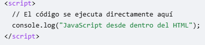
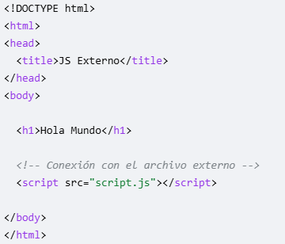
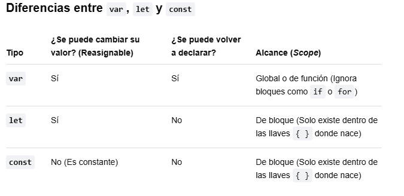
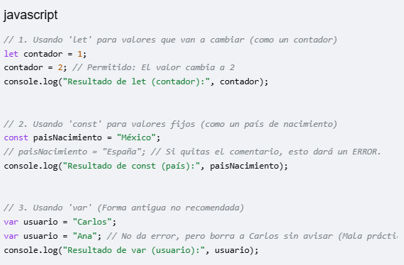

Las dos formas principales de conectar JavaScript con HTML son mediante código interno (escribiendo el script directamente en el archivo HTML) y mediante un archivo externo (vinculando un archivo .js independiente).
EJEMPLO JAVA SCRIPT INTERNO

EJEMPLO DE JAVA SCRIPT EXTERNO

1. Escribe el código en tu archivo. Debes utilizar el comando console.log() dentro de tu código JavaScript para enviar los datos que deseas revisar a la consola.
2. Abre la consola en tu navegador. Abre tu archivo HTML en cualquier navegador web (Chrome, Edge, Firefox o Safari) y abre las herramientas de desarrollador con alguno de estos métodos: El camino rápido (Teclado): Presiona F12 (o Ctrl + Mayús + I en Windows / Cmd + Option + I en Mac). El camino visual (Ratón): Haz clic derecho en cualquier parte de la página web y selecciona Inspeccionar.
3. Selecciona la pestaña "Consola" En el panel lateral o inferior que se acaba de abrir, haz clic en la pestaña que dice Console (Consola). Allí verás impreso el texto "¡La conexión funciona correctamente!" junto con cualquier otro mensaje de error o aviso del sistema. Para continuar con tus pruebas, dime si prefieres aprender a ver el valor de una variable matemática en la consola o si deseas ver cómo aparece un mensaje de error cuando el código falla.
Las variables en JavaScript son contenedores digitales que sirven para guardar y etiquetar datos (como texto, números o estados) que tu programa necesita recordar y usar más adelante.


No se recomienda utilizar var. En el JavaScript moderno, su uso se considera una mala práctica por dos razones
Provoca errores invisibles (Falta de alcance de bloque): var no respeta los bloques de código como los ciclos o las condiciones if. Si declaras un var dentro de un if, esa variable "se escapa" y puede alterar o borrar datos en otras partes de tu programa sin que te des cuenta.
Permite la doble declaración: Con var puedes crear dos variables con el mismo nombre exacto en el mismo archivo, y el navegador no te avisará del error; simplemente borrará la primera, lo que causa fallos difíciles de encontrar. let y const detienen el programa de inmediato y te avisan del error.